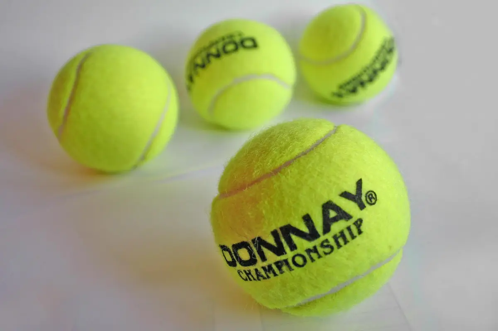

Qué ver esta semana
Torneos ATP y WTA del 19 al 25 de octubre, con sede, superficie y quién juega. Las horas en Madrid, Buenos Aires y Ciudad de México, en cuanto cada torneo publique su orden de juego. Actualizado el 18 de octubre de 2026.
-
Almaty Open, Almaty, Kazajistán, 19–25 de octubre de 2026 ATP · ATP 250 · pista dura indoor
ATP · ATP 250 · pista dura indoorATP 250 bajo techo en Almaty (Kazajistán).
Fuentes: ATP, ficha del Almaty Open · ATP, calendario 2026
-
BNP Paribas Fortis European Open, Bruselas, Bélgica, 19–25 de octubre de 2026ATP · ATP 250 · pista dura indoorATP 250 bajo techo en el Brussels Expo. En el cuadro: Alejandro Davidovich Fokina, recién campeón en Shanghái, y Francisco Cerúndolo.
Fuentes: ATP, previa del European Open 2026 · ATP, ficha de Bruselas · ATP, calendario 2026
-
Grand Prix Auvergne-Rhône-Alpes, Lyon, Francia, 19–25 de octubre de 2026ATP · ATP 250 · pista dura indoorATP 250 bajo techo en el LDLC Arena. Nombres destacados de la previa ATP: Taylor Fritz, Flavio Cobolli, Tommy Paul, Ugo Humbert y Stan Wawrinka.
Fuentes: ATP, previa de Lyon 2026 · ATP, ficha de Lyon · ATP, calendario 2026
-
BNB Ningbo Open, Ningbo, China, 19–25 de octubre de 2026 WTA · WTA 500 · pista dura
WTA · WTA 500 · pista duraWTA 500 en pista dura al aire libre, en el Ningbo Tennis Center.
Fuentes: WTA, ficha del Ningbo Open 2026 · WTA, calendario 2026 a 2 de octubre
-
Kinoshita Group Japan Open, Osaka, Japón, 19–25 de octubre de 2026WTA · WTA 250 · pista duraWTA 250 en pista dura al aire libre, en el Utsubo Tennis Center.
Fuentes: WTA, ficha del Japan Open 2026 · WTA, calendario 2026 a 2 de octubre
Españoles y latinoamericanos esta semana
- Alejandro Davidovich Fokina. BNP Paribas Fortis European Open, Bruselas, Bélgica, 19–25 de octubre de 2026. ATP, previa del European Open 2026.
- Francisco Cerúndolo. BNP Paribas Fortis European Open, Bruselas, Bélgica, 19–25 de octubre de 2026. ATP, previa del European Open 2026.
Después
-
Swiss Indoors Basel, Basilea, Suiza, 26 de octubre–1 de noviembre de 2026ATP · ATP 500 · pista dura indoorATP 500 bajo techo.
Fuentes: ATP, ficha de Basilea · ATP, calendario 2026
-
Erste Bank Open, Viena, Austria, 26 de octubre–1 de noviembre de 2026ATP · ATP 500 · pista dura indoorATP 500 bajo techo.
Fuentes: ATP, ficha de Viena · ATP, calendario 2026
-
Rolex Paris Masters, París, Francia, 2–8 de noviembre de 2026ATP · ATP Masters 1000 · pista dura indoorATP Masters 1000 bajo techo. El último 1000 del año.
Fuentes: ATP, ficha del Rolex Paris Masters · ATP, calendario 2026